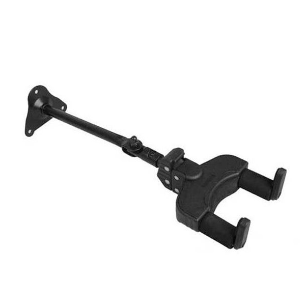
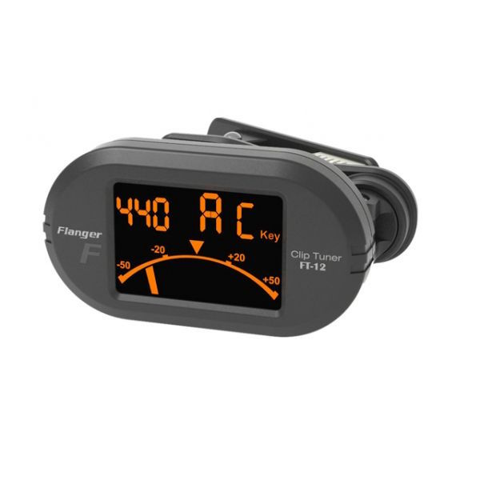
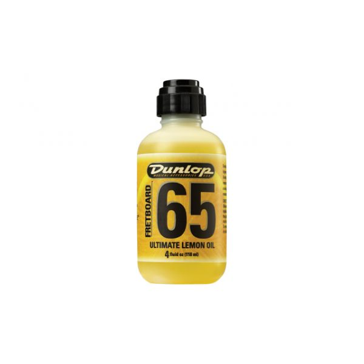
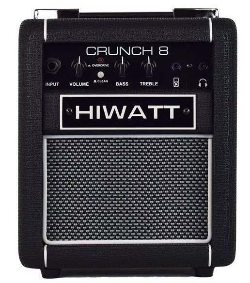
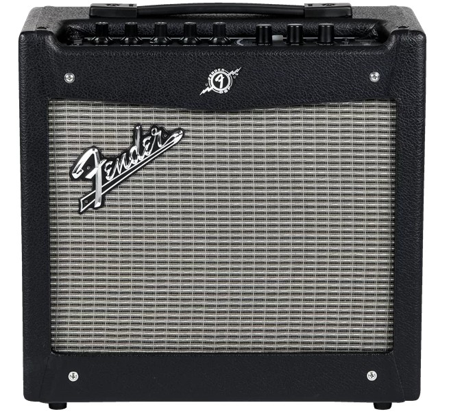
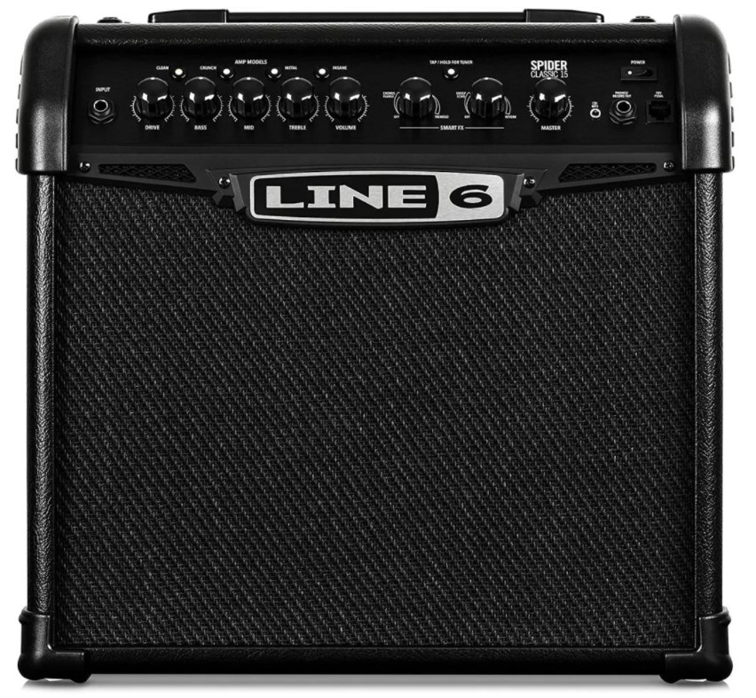

Accesorios
La lista de los siguientes accesorios de guitarra ha sido pensada para aquellos que ya tienen en su poder un amplificador, una correa, una púa, un slide o una cejilla, ya que estos también pueden considerarse como accesorios para una guitarra.
Soporte para guitarra
Puede ser un soporte de pared para una guitarra o un soportes de suelo (los hay hasta para tres y seis guitarras), pero este sin duda es uno de los accesorios de guitarra más indispensables para tener tanto en casa como en el estudio. Seguros soportes que dejarán a la vista de todos los visitantes tu guitarra/bajo.
Afinador con pinza
Si buscas un buen afinador con pinza te aconsejamos modelos como este Flanger que se agarra a tu mástil. Más de uno recordará esos afinadores del tamaño de un móvil con luces de colores que teníamos que apoyar en una superficie cercana para afinar nuestro instrumento.
Aceites limpiadores
Algunos prefieren limpiadores de aceite de limón y otros piensan que son mejores los limpiadores creados con ultra refinados de los árboles y semillas. Dependerá del material con el que esté hecha tu guitarra, lo que no quita que es tu deber mantener las maderas limpias tras el tute que nuestras manos les dan año tras año.
Amplificadores
Marshall, Fender, Roland, Hiwatt, Line 6… Dentro del mundo de los amplis, existen infinidad de marcas pero nosotros te queremos ofrecer las más buscadas para que nunca te quedes atrás. Y como los inicios siempre cuestan, te vamos a presentar, uno por uno, nuestro top cinco de amplificadores de guitarra.
Hiwatt Crunch 8, toda la potencia de los amplificadores Hiwatt
De diseño inglés, Hiwatt siempre se ha caracterizado por la fabricación de los amplificadores más aguerridos del mercado. Los mejores guitarristas de la historia siempre han elegido Hiwatt para sus espectaculares conciertos, pero tú todavía tienes que practicar en casa.Te presentamos este Hiwatt Crunch 8. Su diseño es muy práctico para que pueda viajar contigo a cualquier parte y sus 8 watios te darán toda la potencia que necesitas para empezar tu andadura con la guitarra eléctrica. Además cuenta con un peso que no supera los 3 kilos, lo que lo hace aún más confortable.
Fender Mustang I, la mayor calidad elevada a la mínima expresión
Hiwatt es posible que no os sonara a todo el público, pero cuando pronuncias Fender te imaginas tocando como tus ídolos. La marca californiana siempre se ha caracterizado por proporcionar al guitarrista todo lo que necesita y este Fender Mustang I así lo demuestra.Con una relación calidad precio impresionante, este amplificador te proporcionará hasta 20 watios de potencia para que tu nivel se eleve rápidamente. Su diseño es cómodo y su acabado minimalista.
Line 6 Spider V15, el pequeño de una saga eterna
Todo guitarrista conoce la línea Spider de amplificadores de la marca Line 6. En este caso y como queremos que practiques en casa, te vamos a presentar al hermano pequeño, el Line 6 Spider V15.De tamaño algo mayor que los modelos anteriores, este combo de guitarra de 15 watios cuenta con una fuerza superlativa, además de tener hasta 6 efectos disponibles para que averigües cual es el que más se adapta a ti. Y como no, en Musicopolix lo tenemos.